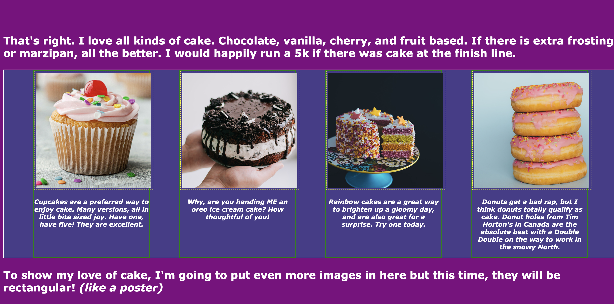
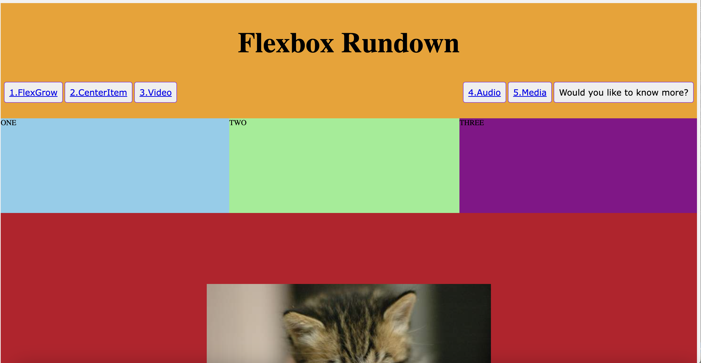
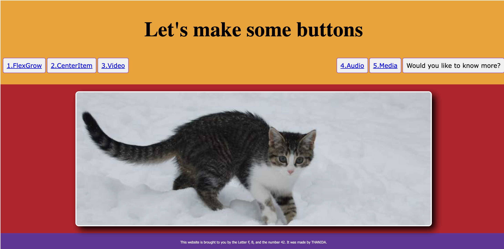

CARP
Here's my 4 posters that I created

First poster
This poster I decided to let it be my final poster out of 4.
I created repeating circles and circle curves.
I design it through photoshop because it was easier for me and then export it to InDesign.
I then used the colour contrast of yellow text and black background to make it stands out.
Next, the alignment of typography is alligned to the top left for location and the date and the name
of the festival are on the bottom right.
With that, I used a dilatational typographic system to create more variety within this poster.
I have used proximity by using the white space grouping. This indicates that everything is
grouped and that for the reader to read the text easier.

Second Poster
Second poster is again, I created repeating circles and circle curves just like the previous one. I used a pen tool to create circles and that to make a repetition. The colour contrast is red, blue, yellow and black which could be considered the primary colour. The alignment of this poster is at the centre and on both sides of the poster. This is to create a variety of a poster and not make to squeeze. After that, I used the proximity of white space and grouping. This means that the information on the bottom is for location and the date, and the middle is the name of the festival to make it obvious.

Third Poster
For this design, I used eraser tools from photoshop to make it feels like someone just scratch the paper.
This is to create the attention of the reader.
By using this technique, I decided to put all the main information which is the festival name and the date to the scratching part.
To include contrast, I used the most colourful balloon to draw attention and then soften the text colour.
This created an amazing colour contrast. The alignment of text is aligned all on the left side.
To include the proximity, I have used white space and grouping of information.

Fourth Poster
The last poster, I used the repetition of rectangles but in a different colour.
The rectangle is all in different sizes to create uniqueness. The colour contrast is red, white, grey, and purple.
This is helping the reader to see the picture clearly including the message itself.
When talking about the alignment, I decided to align it on both left and right to make it balanced and fully maximise the space.
The proximity is pretty obvious that it's all been grouped.
Typography
Here are all the typographic systems that I made through illustration.

The imaginary line divides everything (axis).
Center everything along the same line to make a bilateral design.
In this design, I used the line in the centre as an imaginary line.
On the left side, I created a pattern to look like a ladder and change the colour opacity.
Radial

The majority of the body text is positioned radioactively around the centre using the radial typographic system.
For this design, I decided to reduce the colour opacity of circles.
This is to make a gradient colour and style.
Dilatational

The font is placed along circular paths in the designs.
A point in the text is surrounded by curves.
The tree trunk's rings serve as a beautiful illustration of dilatational design.
In this design, I made lots of circles including the transparent one
to allow the text to be curved along the circular path.
Random

Random typography will not really follow to any set guidelines or patterns.
Text may seem shattered and angled incorrectly.
A common characteristic is an inconsistency in spacing.
This design, I reduce the colour opacity to create blurring, messiness, and repeated texts.
Grid

An arrangement of horizontal and vertical lines called a grid can help with layout decisions.
They could be applied to promote consistency.
It makes relating various elements simpler.
For this design, I used four lines to create a layout and to make it more organised.
Modular

Any letter that is constructed from a small number of distinctive pieces
that can be repeated, flipped, and flopped without being scaled is referred to as modular.
I decided to make both circles and rectangles to create a variety.
This makes it easier to read as it separates the information.
Transitional

The purpose of transitional type is that the text will flow naturally.
It typically seems unorganized, isn't used for many projects,
and is most frequently employed in books and movie posters.
I wanted to present this style as the sunsets by the sea but upside down.
I used pen tools to create a wave to represent transitionally and then reduce the opacity to create a gradient.
Bilateral

Of the visual organisation systems, the bilateral system has the greatest degree of symmetry.
It comprises of one axis with text lines centred on it.
I made an upside-down triangle to reflect the polygon artwork and to make it looks more attractive to look at.
CODE
These are my four html worksheets.

Week 2
Week 5
Week 5
REFLECTION
Creating my website from scratch was a real challenge. Many things didn't go as I planned on the wireframe.
For example, the four coding HTML worksheet section was supposed to be on the same level but I wasn't satisfied with how it turned out.
This means that I have to redesign the coding section. Another thing I find it difficult was the typography section.
I drew all the pictures in my head that this section is going to be four on top and four on the bottom.
However, it didn't go as planned and I ended up making rectangle boxes for each typography instead.
Before starting the website, I always like making multiple pages for the website as I used to do A-level from wix.com.
This is because it wasn't difficult to make a website as they provided all the templates for me.
The fact that I have to write all the codes from scratch makes it even harder for me to do multiple pages therefore I decided to go with a single page.
What went well in the process of creating a website was the home page and the header.
This is one of the sections I can follow my planned.
The process of creating posters was an amazing experience as I had to plan what theme should I go with
and all the CARP elements that I have to include. What I find it difficult was to make the alignment onto the centre.
The reason behind this is that there was something wrong with my HTML and CSS and it messed up therefore it took me quite a few days to figure it out.
What I also struggled with was making a responsive website because some sections are not responsive.
This indicates that doing the HTML worksheet helped me with creating a website a lot.
After finishing my website, I realise that coding is extremely important to my future career.
Before I created a website, I never knew that I would like it. Although it is a challenge for me to design everything from scratch, it was worth it.
Now I know the basics of making a website, I would improve on coding skills and have a better idea of layering the wireframes.
To conclude, making my first website was a great experience and there are so many things I learned from creating this.
It would definitely help me with my future lessons including my future career path.